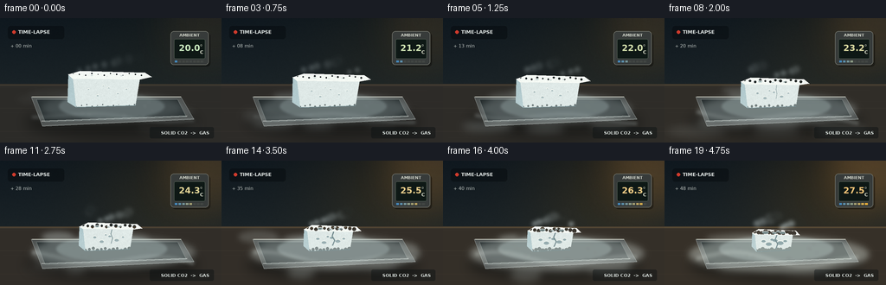
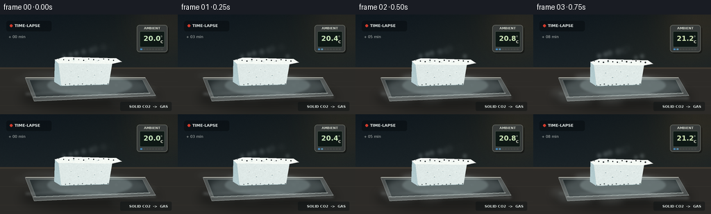

CODING AGENTS AS PIXEL WORLD MODELS
traex/GPT-5.6-Sol · phygen_116
点击播放 · 原生 RGB 像素
逐轮保存的候选
回放视频、检查图与代码变化。
每份候选均可单独播放。实际图片检查记录在下方工具轨迹中。
候选 01播放与检查图
点击播放 · 原生 RGB 像素


展开代码变化
--- 上一保存版本
+++ 本次保存版本
@@ -0,0 +1,288 @@
+from pathlib import Path
+import math
+import numpy as np
+from PIL import Image, ImageDraw, ImageFont, ImageFilter
+import artifact_io
+
+# Deterministic procedural timelapse of dry ice sublimating on a laboratory tray.
+ROOT = Path(__file__).resolve().parent
+W, H, N = 256, 144, 20
+S = 3
+WW, HH = W*S, H*S
+rng = np.random.default_rng(116)
+
+FONT_REG = "/usr/share/fonts/truetype/dejavu/DejaVuSans.ttf"
+FONT_BOLD = "/usr/share/fonts/truetype/dejavu/DejaVuSans-Bold.ttf"
+def font(size, bold=False):
+ return ImageFont.truetype(FONT_BOLD if bold else FONT_REG, size*S)
+
+def sc(v): return int(round(v*S))
+def pts(seq): return [(sc(x), sc(y)) for x, y in seq]
+
+def add_text(draw, xy, text, fill, size, bold=False, anchor=None):
+ draw.text((sc(xy[0]), sc(xy[1])), text, fill=fill, font=font(size, bold), anchor=anchor,
+ stroke_width=0)
+
+def composite_color(im, mask, color):
+ layer = Image.new("RGB", im.size, color)
+ im.paste(layer, (0, 0), mask)
+
+# Coherent, independently moving vapor parcels.
+particles = []
+for i in range(68):
+ birth = rng.uniform(-0.95, 0.94)
+ life = rng.uniform(0.32, 0.68)
+ side = -1 if rng.random() < .52 else 1
+ x0 = rng.normal(128, 29)
+ y0 = rng.uniform(88, 119)
+ vx = side * rng.uniform(22, 72)
+ vy = rng.uniform(2, 18) # cold fog settles toward the foreground
+ rx = rng.uniform(9, 28)
+ ry = rng.uniform(2.2, 6.5)
+ particles.append((birth, life, x0, y0, vx, vy, rx, ry, rng.uniform(.55, 1.0)))
+
+# Fine fixed texture fields: stable over time and therefore timelapse-like, not flickery.
+yy, xx = np.mgrid[0:HH, 0:WW]
+fixed_noise = rng.normal(0, 1, (HH, WW))
+noise_im = Image.fromarray(np.uint8(np.clip((fixed_noise+3)*38, 0, 255))).filter(ImageFilter.GaussianBlur(sc(.35)))
+noise_arr = np.asarray(noise_im).astype(np.float32) / 38 - 3
+
+def mist_layer(t, front=True):
+ m = Image.new("L", (WW, HH), 0)
+ d = ImageDraw.Draw(m, "L")
+ for birth, life, x0, y0, vx, vy, rx, ry, strength in particles:
+ age = (t - birth) / life
+ if not (0 <= age <= 1):
+ continue
+ # Rear wisps are higher/slimmer; front fog hugs and spills across the surface.
+ is_front = y0 >= 101
+ if is_front != front:
+ continue
+ fade = math.sin(math.pi * age) ** .72
+ vigor = .52 + .88*t
+ x = x0 + vx*age + 3*math.sin(i_hash(x0)*4 + age*3)
+ y = y0 + vy*age + (5*t if front else -9*age)
+ rr_x = rx*(.75 + .8*age)*(1 + .2*t)
+ rr_y = ry*(.75 + .65*age)
+ a = int(100 * strength * fade * vigor)
+ d.ellipse((sc(x-rr_x), sc(y-rr_y), sc(x+rr_x), sc(y+rr_y)), fill=min(185, a))
+ # A continuous cold blanket around the source keeps the effect coherent.
+ d.ellipse((sc(48-20*t), sc(88), sc(211+25*t), sc(119+10*t)), fill=int(25+33*t))
+ blur = ImageFilter.GaussianBlur(sc(4.2 if front else 3.0))
+ return m.filter(blur)
+
+def i_hash(x):
+ return (math.sin(x*12.9898)*43758.5453) % 1
+
+def render_frame(fi):
+ t = fi/(N-1)
+ # Wall/background: cool at first, acquiring a gentle warm cast as room temperature rises.
+ y = np.linspace(0, 1, HH)[:, None, None]
+ x = np.linspace(0, 1, WW)[None, :, None]
+ top = np.array([15, 24, 31], np.float32)
+ bottom = np.array([35, 43, 45], np.float32)
+ bg = top*(1-y) + bottom*y
+ bg = np.broadcast_to(bg, (HH, WW, 3)).copy()
+ warm = np.exp(-(((x[...,0]-.77)/.38)**2 + ((np.linspace(0,1,HH)[:,None]-.24)/.58)**2))[...,None]
+ bg += warm*np.array([21*t+5, 11*t+3, -2], np.float32)
+ bg += noise_arr[...,None]*1.5
+ bg = np.uint8(np.clip(bg, 0, 255))
+ im = Image.fromarray(bg, "RGB")
+ draw = ImageDraw.Draw(im, "RGBA")
+
+ # Soft out-of-focus warm practical light, increasingly bright.
+ glow = Image.new("RGBA", (WW,HH), (0,0,0,0))
+ gd = ImageDraw.Draw(glow, "RGBA")
+ gd.ellipse((sc(176),sc(-28),sc(274),sc(70)), fill=(255,171,75,int(18+35*t)))
+ glow = glow.filter(ImageFilter.GaussianBlur(sc(25)))
+ im = Image.alpha_composite(im.convert("RGBA"), glow).convert("RGB")
+ draw = ImageDraw.Draw(im, "RGBA")
+
+ # Table plane and receding seam.
+ draw.polygon(pts([(0,76),(256,76),(256,144),(0,144)]), fill=(44+int(10*t),43+int(5*t),40,255))
+ for yline, alpha in [(78,60),(104,25),(131,18)]:
+ draw.line(pts([(0,yline),(256,yline)]), fill=(120,104,78,alpha), width=sc(.5))
+ # Wood/lab bench texture and highlights.
+ for k in range(18):
+ yy0 = 80 + (k*13 % 62)
+ x0 = (k*37) % 256
+ draw.line(pts([(x0,yy0),(min(256,x0+42+(k%4)*11),yy0+.8)]), fill=(97,82,62,18), width=sc(.5))
+ draw.line(pts([(0,77),(256,77)]), fill=(202,160,98,int(35+45*t)), width=sc(1))
+
+ # Ambient temperature instrument in the background.
+ # Soft cast shadow
+ draw.rounded_rectangle((sc(199),sc(17),sc(243),sc(56)), radius=sc(4), fill=(0,0,0,85))
+ draw.rounded_rectangle((sc(197),sc(15),sc(241),sc(54)), radius=sc(4), fill=(55,59,58,255), outline=(125,127,118,210), width=sc(.7))
+ draw.rounded_rectangle((sc(201),sc(24),sc(237),sc(47)), radius=sc(2), fill=(14,24,21,255), outline=(101,113,101,170), width=sc(.7))
+ add_text(draw, (219,19.7), "AMBIENT", (211,214,203,220), 4.6, True, anchor="mm")
+ temp = 20.0 + 7.5*t
+ add_text(draw, (219,34.7), f"{temp:0.1f}", (200+int(45*t),232-int(36*t),190-int(70*t),255), 10, True, anchor="mm")
+ add_text(draw, (232.8,31.0), "o", (215,220,202,230), 4, False, anchor="mm")
+ add_text(draw, (233,39.5), "C", (215,220,202,230), 5.5, True, anchor="mm")
+ # Indicator bar goes from blue toward amber.
+ for q in range(8):
+ frac = q/7
+ col = (int(70+180*frac), int(145+40*frac), int(202-145*frac), 235)
+ draw.rectangle((sc(202+q*4.25),sc(49),sc(204.8+q*4.25),sc(51)), fill=col if frac <= t+.12 else (73,76,72,160))
+
+ # Timelapse recording cue and elapsed clock.
+ draw.rounded_rectangle((sc(9),sc(9),sc(74),sc(24)), radius=sc(3), fill=(5,9,12,120))
+ draw.ellipse((sc(14),sc(14),sc(18),sc(18)), fill=(225,61,46,235))
+ add_text(draw, (21,16), "TIME-LAPSE", (224,230,228,225), 5.5, True, anchor="lm")
+ add_text(draw, (12,29), f"+ {int(round(t*48)):02d} min", (195,201,197,170), 5.3, False)
+
+ # Tray shadow on table.
+ shadow = Image.new("L", (WW,HH), 0)
+ sd = ImageDraw.Draw(shadow)
+ sd.ellipse((sc(29),sc(102),sc(229),sc(139)), fill=145)
+ shadow = shadow.filter(ImageFilter.GaussianBlur(sc(7)))
+ composite_color(im, shadow, (15,16,15))
+ draw = ImageDraw.Draw(im, "RGBA")
+
+ # Shallow stainless tray with perspective.
+ tray_outer = [(36,91),(209,91),(224,117),(49,125)]
+ draw.polygon(pts(tray_outer), fill=(77,81,80,255), outline=(184,192,189,225))
+ draw.polygon(pts([(42,94),(205,94),(215,114),(52,120)]), fill=(35,42,43,255), outline=(141,155,153,210))
+ draw.line(pts([(48,119),(216,113)]), fill=(221,226,220,145), width=sc(1.2))
+ draw.line(pts([(37,91),(209,91)]), fill=(234,235,220,170), width=sc(1))
+ # Frost halo/residue expands and becomes irregular around the shrinking block.
+ frost = Image.new("L", (WW,HH), 0)
+ fd = ImageDraw.Draw(frost)
+ fd.ellipse((sc(68-5*t),sc(87),sc(190+5*t),sc(117)), fill=int(58+28*t))
+ for j in range(16):
+ ang = j*2.399
+ rr = 39 + 23*((j*17)%13)/13
+ px = 129 + math.cos(ang)*rr
+ py = 103 + math.sin(ang)*rr*.22
+ rad = 1.3 + (j%4)*.55
+ fd.ellipse((sc(px-rad),sc(py-rad*.45),sc(px+rad),sc(py+rad*.45)), fill=70)
+ frost = frost.filter(ImageFilter.GaussianBlur(sc(1.2)))
+ composite_color(im, frost, (184,207,207))
+
+ # Rear rising condensation wisps behind the block.
+ rear = mist_layer(t, front=False)
+ fog_color = Image.new("RGB", (WW,HH), (210+int(20*t),225+int(13*t),228))
+ im.paste(fog_color, (0,0), rear)
+ draw = ImageDraw.Draw(im, "RGBA")
+
+ # Main dry-ice block shrinks continuously; bottom remains supported by tray.
+ # Exponential-looking mass loss; edge rounding increases.
+ w = 98*(1-.43*t)
+ h = 41*(1-.38*t)
+ cx = 126 + 2*t
+ ytop = 61 + 18*t
+ depth = 10*(1-.28*t)
+ bottom = ytop + h
+ # Stable slight irregularity in silhouette as pitting progresses.
+ j1 = 1.0*math.sin(t*2.2)
+ top_face = [(cx-w*.48,ytop+4+j1),(cx-w*.34,ytop),(cx+w*.42,ytop+2),
+ (cx+w*.50,ytop+7),(cx+w*.36,ytop+depth),(cx-w*.43,ytop+depth-1)]
+ front_face = [(cx-w*.43,ytop+depth-1),(cx+w*.36,ytop+depth),
+ (cx+w*.31,bottom-1),(cx-w*.39,bottom+1)]
+ left_face = [(cx-w*.48,ytop+4+j1),(cx-w*.43,ytop+depth-1),
+ (cx-w*.39,bottom+1),(cx-w*.49,bottom-5)]
+ # Face masks allow granular texture.
+ mtop = Image.new("L",(WW,HH),0); ImageDraw.Draw(mtop).polygon(pts(top_face), fill=255)
+ mfront = Image.new("L",(WW,HH),0); ImageDraw.Draw(mfront).polygon(pts(front_face), fill=255)
+ mleft = Image.new("L",(WW,HH),0); ImageDraw.Draw(mleft).polygon(pts(left_face), fill=255)
+ # Slightly erode appearance through tiny scalloped edge bites.
+ for mask, face in [(mtop,'top'),(mfront,'front')]:
+ md = ImageDraw.Draw(mask)
+ for j in range(12):
+ u=(j+.35)/12
+ if face=='top':
+ px=cx-w*.45+u*w*.88; py=ytop+3+(j%3)*1.0
+ else:
+ px=cx-w*.41+u*w*.75; py=bottom-(j%3)*1.0
+ rad=(.45+1.4*t)*(1+(j%4)*.16)
+ md.ellipse((sc(px-rad),sc(py-rad),sc(px+rad),sc(py+rad)),fill=0)
+
+ # Textured face composites.
+ arr = np.zeros((HH,WW,3),dtype=np.uint8)
+ for c, base in enumerate((221,231,229)):
+ arr[...,c]=np.uint8(np.clip(base + noise_arr*9 + (xx/WW)*5,0,255))
+ im.paste(Image.fromarray(arr), (0,0), mfront)
+ arr2=np.zeros_like(arr)
+ for c, base in enumerate((242,247,242)):
+ arr2[...,c]=np.uint8(np.clip(base + noise_arr*7 + (1-yy/HH)*5,0,255))
+ im.paste(Image.fromarray(arr2), (0,0), mtop)
+ arr3=np.zeros_like(arr)
+ for c, base in enumerate((177,201,205)):
+ arr3[...,c]=np.uint8(np.clip(base + noise_arr*7,0,255))
+ im.paste(Image.fromarray(arr3), (0,0), mleft)
+ draw = ImageDraw.Draw(im, "RGBA")
+ # Hard frosty rims and contact shade.
+ draw.line(pts(top_face+[top_face[0]]), fill=(255,255,249,220), width=sc(.75), joint="curve")
+ draw.line(pts([(cx-w*.39,bottom+1),(cx+w*.31,bottom-1)]), fill=(101,133,140,180), width=sc(1.1))
+
+ # Growing pores / sublimation cavities, tied to normalized face positions.
+ pits = [(.19,.35,.9),(.34,.65,1.3),(.52,.28,1.0),(.67,.55,1.4),(.81,.34,.8),(.43,.18,.7)]
+ for j,(u,v,r0) in enumerate(pits):
+ appear = j*.055
+ growth = max(0,(t-appear)/(1-appear))
+ px = cx-w*.38 + u*w*.72
+ py = ytop+depth+3 + v*max(4,h-depth-7)
+ r = r0*(.8+1.75*growth)
+ draw.ellipse((sc(px-r),sc(py-r*.55),sc(px+r),sc(py+r*.55)), fill=(91,123,131,int(100+90*growth)))
+ draw.arc((sc(px-r-.7),sc(py-r*.55-.7),sc(px+r+.7),sc(py+r*.55+.7)),180,345,
+ fill=(255,255,247,190),width=sc(.6))
+ top_pits=[(.25,.38,1.2),(.48,.50,.85),(.70,.42,1.15),(.58,.19,.65)]
+ for j,(u,v,r0) in enumerate(top_pits):
+ growth=max(0,(t-.08*j)/(1-.08*j))
+ px=cx-w*.40+u*w*.78
+ py=ytop+2+v*max(4,depth-2)
+ r=r0*(.75+1.35*growth)
+ draw.ellipse((sc(px-r*1.5),sc(py-r*.65),sc(px+r*1.5),sc(py+r*.65)),fill=(134,162,165,int(100+90*growth)))
+ draw.arc((sc(px-r*1.5),sc(py-r*.65),sc(px+r*1.5),sc(py+r*.65)),185,350,fill=(255,255,251,190),width=sc(.55))
+
+ # A crack develops (solid fractures, but never melts), subtly widening late in timelapse.
+ if t > .27:
+ a=min(1,(t-.27)/.5)
+ xcr=cx+w*.03
+ crack=[(xcr,ytop+depth),(xcr-2*a,ytop+depth+5),(xcr+1.1*a,ytop+depth+10),
+ (xcr-1.5*a, min(bottom-2,ytop+depth+16))]
+ draw.line(pts(crack),fill=(76,105,112,int(90+130*a)),width=max(1,sc(.45+1.0*a)),joint="curve")
+ draw.line(pts([(x+.8,y) for x,y in crack]),fill=(248,252,245,130),width=sc(.45))
+
+ # Local jets emerging from top/edges; increase with ambient warmth.
+ jets = Image.new("L",(WW,HH),0); jd=ImageDraw.Draw(jets)
+ for j in range(8):
+ phase=(j*.139+t*1.37)%1
+ base_x=cx-w*.35+(j/7)*w*.68
+ y0=ytop+4
+ rise=5+15*phase
+ drift=math.sin(j*2.1+t*4)*4*phase
+ rx=(1.8+3.6*phase)*(1+.4*t); ry=2+4*phase
+ alpha=int((1-phase)*105*(.65+.8*t))
+ jd.ellipse((sc(base_x+drift-rx),sc(y0-rise-ry),sc(base_x+drift+rx),sc(y0-rise+ry)),fill=alpha)
+ jets=jets.filter(ImageFilter.GaussianBlur(sc(2.0)))
+ im.paste(Image.new("RGB",(WW,HH),(224,238,239)),(0,0),jets)
+
+ # Foreground cold fog spills over both sides of the tray and toward camera.
+ front = mist_layer(t, front=True)
+ # Extra ribbon following tray lip.
+ fd = ImageDraw.Draw(front)
+ amp=1.6+1.8*t
+ ribbon=[]
+ for xq in np.linspace(37,224,60):
+ yq=111+6*math.sin((xq/24)-t*5)*amp/3 + (xq-37)*.035
+ ribbon.append((sc(xq),sc(yq)))
+ fd.line(ribbon, fill=int(50+48*t), width=sc(3.5+2*t))
+ front=front.filter(ImageFilter.GaussianBlur(sc(1.6)))
+ fogfg=Image.new("RGB",(WW,HH),(217+int(12*t),230+int(8*t),230))
+ im.paste(fogfg,(0,0),front)
+
+ # Reassert sharp reflective front lip through translucent fog.
+ draw=ImageDraw.Draw(im,"RGBA")
+ draw.line(pts([(49,124),(224,116)]),fill=(223,229,224,95),width=sc(.8))
+ # Small caption reinforces phase change, without dominating the scene.
+ draw.rounded_rectangle((sc(173),sc(126),sc(247),sc(139)),radius=sc(2),fill=(8,14,16,105))
+ add_text(draw,(242,132.5),"SOLID CO2 -> GAS",(223,230,226,195),5.1,True,anchor="rm")
+
+ # Downsample supersampled render for smooth, photographic edges.
+ im=im.resize((W,H),Image.Resampling.LANCZOS).convert("RGB")
+ return np.asarray(im,dtype=np.uint8)
+
+frames=np.stack([render_frame(i) for i in range(N)],axis=0)
+artifact_io.save(frames, ROOT)
+print(f"saved {frames.shape} {frames.dtype} to {ROOT}")
可观测工具轨迹
实际执行的命令与返回图片。
命令 1exit 0
/bin/bash -lc "cat prompt.txt && printf '\\n--- GENERATION_RULES ---\\n' && cat GENERATION_RULES.md && printf '\\n--- TASK_SPEC ---\\n' && cat task_spec.json"
命令 2exit 0
/bin/bash -lc "find . -maxdepth 3 -type f -printf '%p\\n' | sort && printf '\\n--- binaries ---\\n' && command -v ffmpeg || true; command -v blender || true; command -v python3 || true"
命令 3exit 0
/bin/bash -lc 'cat artifact_io.py'
命令 4exit 0
/bin/bash -lc "cat > generate.py <<'PY'
from pathlib import Path
import math
import numpy as np
from PIL import Image, ImageDraw, ImageFont, ImageFilter
import artifact_io
# Deterministic procedural timelapse of dry ice sublimating on a laboratory tray.
ROOT = Path(__file__).resolve().parent
W, H, N = 256, 144, 20
S = 3
WW, HH = W*S, H*S
rng = np.random.default_rng(116)
FONT_REG = \"/usr/share/fonts/truetype/dejavu/DejaVuSans.ttf\"
FONT_BOLD = \"/usr/share/fonts/truetype/dejavu/DejaVuSans-Bold.ttf\"
def font(size, bold=False):
return ImageFont.truetype(FONT_BOLD if bold else FONT_REG, size*S)
def sc(v): return int(round(v*S))
def pts(seq): return [(sc(x), sc(y)) for x, y in seq]
def add_text(draw, xy, text, fill, size, bold=False, anchor=None):
draw.text((sc(xy[0]), sc(xy[1])), text, fill=fill, font=font(size, bold), anchor=anchor,
stroke_width=0)
def composite_color(im, mask, color):
layer = Image.new(\"RGB\", im.size, color)
im.paste(layer, (0, 0), mask)
# Coherent, independently moving vapor parcels.
particles = []
for i in range(68):
birth = rng.uniform(-0.95, 0.94)
life = rng.uniform(0.32, 0.68)
side = -1 if rng.random() < .52 else 1
x0 = rng.normal(128, 29)
y0 = rng.uniform(88, 119)
vx = side * rng.uniform(22, 72)
vy = rng.uniform(2, 18) # cold fog settles toward the foreground
rx = rng.uniform(9, 28)
ry = rng.uniform(2.2, 6.5)
particles.append((birth, life, x0, y0, vx, vy, rx, ry, rng.uniform(.55, 1.0)))
# Fine fixed texture fields: stable over time and therefore timelapse-like, not flickery.
yy, xx = np.mgrid[0:HH, 0:WW]
fixed_noise = rng.normal(0, 1, (HH, WW))
noise_im = Image.fromarray(np.uint8(np.clip((fixed_noise+3)*38, 0, 255))).filter(ImageFilter.GaussianBlur(sc(.35)))
noise_arr = np.asarray(noise_im).astype(np.float32) / 38 - 3
def mist_layer(t, front=True):
m = Image.new(\"L\", (WW, HH), 0)
d = ImageDraw.Draw(m, \"L\")
for birth, life, x0, y0, vx, vy, rx, ry, strength in particles:
age = (t - birth) / life
if not (0 <= age <= 1):
continue
# Rear wisps are higher/slimmer; front fog hugs and spills across the surface.
is_front = y0 >= 101
if is_front "'!= front:
continue
fade = math.sin(math.pi * age) ** .72
vigor = .52 + .88*t
x = x0 + vx*age + 3*math.sin(i_hash(x0)*4 + age*3)
y = y0 + vy*age + (5*t if front else -9*age)
rr_x = rx*(.75 + .8*age)*(1 + .2*t)
rr_y = ry*(.75 + .65*age)
a = int(100 * strength * fade * vigor)
d.ellipse((sc(x-rr_x), sc(y-rr_y), sc(x+rr_x), sc(y+rr_y)), fill=min(185, a))
# A continuous cold blanket around the source keeps the effect coherent.
d.ellipse((sc(48-20*t), sc(88), sc(211+25*t), sc(119+10*t)), fill=int(25+33*t))
blur = ImageFilter.GaussianBlur(sc(4.2 if front else 3.0))
return m.filter(blur)
def i_hash(x):
return (math.sin(x*12.9898)*43758.5453) % 1
def render_frame(fi):
t = fi/(N-1)
# Wall/background: cool at first, acquiring a gentle warm cast as room temperature rises.
y = np.linspace(0, 1, HH)[:, None, None]
x = np.linspace(0, 1, WW)[None, :, None]
top = np.array([15, 24, 31], np.float32)
bottom = np.array([35, 43, 45], np.float32)
bg = top*(1-y) + bottom*y
bg = np.broadcast_to(bg, (HH, WW, 3)).copy()
warm = np.exp(-(((x[...,0]-.77)/.38)**2 + ((np.linspace(0,1,HH)[:,None]-.24)/.58)**2))[...,None]
bg += warm*np.array([21*t+5, 11*t+3, -2], np.float32)
bg += noise_arr[...,None]*1.5
bg = np.uint8(np.clip(bg, 0, 255))
im = Image.fromarray(bg, "RGB")
draw = ImageDraw.Draw(im, "RGBA")
# Soft out-of-focus warm practical light, increasingly bright.
glow = Image.new("RGBA", (WW,HH), (0,0,0,0))
gd = ImageDraw.Draw(glow, "RGBA")
gd.ellipse((sc(176),sc(-28),sc(274),sc(70)), fill=(255,171,75,int(18+35*t)))
glow = glow.filter(ImageFilter.GaussianBlur(sc(25)))
im = Image.alpha_composite(im.convert("RGBA"), glow).convert("RGB")
draw = ImageDraw.Draw(im, "RGBA")
# Table plane and receding seam.
draw.polygon(pts([(0,76),(256,76),(256,144),(0,144)]), fill=(44+int(10*t),43+int(5*t),40,255))
for yline, alpha in [(78,60),(104,25),(131,18)]:
draw.line(pts([(0,yline),(256,yline)]), fill=(120,104,78,alpha), width=sc(.5))
# Wood/lab bench texture and highlights.
for k in range(18):
yy0 = 80 + (k*13 % 62)
x0 = (k*37) % 256
draw.line(pts([(x0,yy0),(min(256,x0+42+(k%4)*11),yy0+.8)]), fill=(97,82,62,18), width=sc(.5))
draw.line(pts([(0,77),(256,77)]), fill=(202,160,98,int(35+45*t)), width=sc(1))
# Ambient temperature instrument in the background.
# Soft cast shadow
draw.rounded_rectangle((sc(199),sc(17),sc(243),sc(56)), radius=sc(4), fill=(0,0,0,85))
draw.rounded_rectangle((sc(197),sc(15),sc(241),sc(54)), radius=sc(4), fill=(55,59,58,255), outline=(125,127,118,210), width=sc(.7))
draw.rounded_rectangle((sc(201),sc(24),sc(237),sc(47)), radius=sc(2), fill=(14,24,21,255), outline=(101,113,101,170), width=sc(.7))
add_text(draw, (219,19.7), "AMBIENT", (211,214,203,220), 4.6, True, anchor="mm")
temp = 20.0 + 7.5*t
add_text(draw, (219,34.7), f"{temp:0.1f}", (200+int(45*t),232-int(36*t),190-int(70*t),255), 10, True, anchor="mm")
add_text(draw, (232.8,31.0), "o", (215,220,202,230), 4, False, anchor="mm")
add_text(draw, (233,39.5), "C", (215,220,202,230), 5.5, True, anchor="mm")
# Indicator bar goes from blue toward amber.
for q in range(8):
frac = q/7
col = (int(70+180*frac), int(145+40*frac), int(202-145*frac), 235)
draw.rectangle((sc(202+q*4.25),sc(49),sc(204.8+q*4.25),sc(51)), fill=col if frac <= t+.12 else (73,76,72,160))
# Timelapse recording cue and elapsed clock.
draw.rounded_rectangle((sc(9),sc(9),sc(74),sc(24)), radius=sc(3), fill=(5,9,12,120))
draw.ellipse((sc(14),sc(14),sc(18),sc(18)), fill=(225,61,46,235))
add_text(draw, (21,16), "TIME-LAPSE", (224,230,228,225), 5.5, True, anchor="lm")
add_text(draw, (12,29), f"+ {int(round(t*48)):02d} min", (195,201,197,170), 5.3, False)
# Tray shadow on table.
shadow = Image.new("L", (WW,HH), 0)
sd = ImageDraw.Draw(shadow)
sd.ellipse((sc(29),sc(102),sc(229),sc(139)), fill=145)
shadow = shadow.filter(ImageFilter.GaussianBlur(sc(7)))
composite_color(im, shadow, (15,16,15))
draw = ImageDraw.Draw(im, "RGBA")
# Shallow stainless tray with perspective.
tray_outer = [(36,91),(209,91),(224,117),(49,125)]
draw.polygon(pts(tray_outer), fill=(77,81,80,255), outline=(184,192,189,225))
draw.polygon(pts([(42,94),(205,94),(215,114),(52,120)]), fill=(35,42,43,255), outline=(141,155,153,210))
draw.line(pts([(48,119),(216,113)]), fill=(221,226,220,145), width=sc(1.2))
draw.line(pts([(37,91),(209,91)]), fill=(234,235,220,170), width=sc(1))
# Frost halo/residue expands and becomes irregular around the shrinking block.
frost = Image.new("L", (WW,HH), 0)
fd = ImageDraw.Draw(frost)
fd.ellipse((sc(68-5*t),sc(87),sc(190+5*t),sc(117)), fill=int(58+28*t))
for j in range(16):
ang = j*2.399
rr = 39 + 23*((j*17)%13)/13
px = 129 + math.cos(ang)*rr
py = 103 + math.sin(ang)*rr*.22
rad = 1.3 + (j%4)*.55
fd.ellipse((sc(px-rad),sc(py-rad*.45),sc(px+rad),sc(py+rad*.45)), fill=70)
frost = frost.filter(ImageFilter.GaussianBlur(sc(1.2)))
composite_color(im, frost, (184,207,207))
# Rear rising condensation wisps behind the block.
rear = mist_layer(t, front=False)
fog_color = Image.new("RGB", (WW,HH), (210+int(20*t),225+int(13*t),228))
im.paste(fog_color, (0,0), rear)
draw = ImageDraw.Draw(im, "RGBA")
# Main dry-ice block shrinks continuously; bottom remains supported by tray.
# Exponential-looking mass loss; edge rounding increases.
w = 98*(1-.43*t)
h = 41*(1-.38*t)
cx = 126 + 2*t
ytop = 61 + 18*t
depth = 10*(1-.28*t)
bottom = ytop + h
# Stable slight irregularity in silhouette as pitting progresses.
j1 = 1.0*math.sin(t*2.2)
top_face = [(cx-w*.48,ytop+4+j1),(cx-w*.34,ytop),(cx+w*.42,ytop+2),
(cx+w*.50,ytop+7),(cx+w*.36,ytop+depth),(cx-w*.43,ytop+depth-1)]
front_face = [(cx-w*.43,ytop+depth-1),(cx+w*.36,ytop+depth),
(cx+w*.31,bottom-1),(cx-w*.39,bottom+1)]
left_face = [(cx-w*.48,ytop+4+j1),(cx-w*.43,ytop+depth-1),
(cx-w*.39,bottom+1),(cx-w*.49,bottom-5)]
# Face masks allow granular texture.
mtop = Image.new("L",(WW,HH),0); ImageDraw.Draw(mtop).polygon(pts(top_face), fill=255)
mfront = Image.new("L",(WW,HH),0); ImageDraw.Draw(mfront).polygon(pts(front_face), fill=255)
mleft = Image.new("L",(WW,HH),0); ImageDraw.Draw(mleft).polygon(pts(left_face), fill=255)
# Slightly erode appearance through tiny scalloped edge bites.
for mask, face in [(mtop,'"'top'),(mfront,'front')]:
md = ImageDraw.Draw(mask)
for j in range(12):
u=(j+.35)/12
if face=='top':
px=cx-w*.45+u*w*.88; py=ytop+3+(j%3)*1.0
else:
px=cx-w*.41+u*w*.75; py=bottom-(j%3)*1.0
rad=(.45+1.4*t)*(1+(j%4)*.16)
md.ellipse((sc(px-rad),sc(py-rad),sc(px+rad),sc(py+rad)),fill=0)
# Textured face composites.
arr = np.zeros((HH,WW,3),dtype=np.uint8)
for c, base in enumerate((221,231,229)):
arr[...,c]=np.uint8(np.clip(base + noise_arr*9 + (xx/WW)*5,0,255))
im.paste(Image.fromarray(arr), (0,0), mfront)
arr2=np.zeros_like(arr)
for c, base in enumerate((242,247,242)):
arr2[...,c]=np.uint8(np.clip(base + noise_arr*7 + (1-yy/HH)*5,0,255))
im.paste(Image.fromarray(arr2), (0,0), mtop)
arr3=np.zeros_like(arr)
for c, base in enumerate((177,201,205)):
arr3[...,c]=np.uint8(np.clip(base + noise_arr*7,0,255))
im.paste(Image.fromarray(arr3), (0,0), mleft)
draw = ImageDraw.Draw(im, \"RGBA\")
# Hard frosty rims and contact shade.
draw.line(pts(top_face+[top_face[0]]), fill=(255,255,249,220), width=sc(.75), joint=\"curve\")
draw.line(pts([(cx-w*.39,bottom+1),(cx+w*.31,bottom-1)]), fill=(101,133,140,180), width=sc(1.1))
# Growing pores / sublimation cavities, tied to normalized face positions.
pits = [(.19,.35,.9),(.34,.65,1.3),(.52,.28,1.0),(.67,.55,1.4),(.81,.34,.8),(.43,.18,.7)]
for j,(u,v,r0) in enumerate(pits):
appear = j*.055
growth = max(0,(t-appear)/(1-appear))
px = cx-w*.38 + u*w*.72
py = ytop+depth+3 + v*max(4,h-depth-7)
r = r0*(.8+1.75*growth)
draw.ellipse((sc(px-r),sc(py-r*.55),sc(px+r),sc(py+r*.55)), fill=(91,123,131,int(100+90*growth)))
draw.arc((sc(px-r-.7),sc(py-r*.55-.7),sc(px+r+.7),sc(py+r*.55+.7)),180,345,
fill=(255,255,247,190),width=sc(.6))
top_pits=[(.25,.38,1.2),(.48,.50,.85),(.70,.42,1.15),(.58,.19,.65)]
for j,(u,v,r0) in enumerate(top_pits):
growth=max(0,(t-.08*j)/(1-.08*j))
px=cx-w*.40+u*w*.78
py=ytop+2+v*max(4,depth-2)
r=r0*(.75+1.35*growth)
draw.ellipse((sc(px-r*1.5),sc(py-r*.65),sc(px+r*1.5),sc(py+r*.65)),fill=(134,162,165,int(100+90*growth)))
draw.arc((sc(px-r*1.5),sc(py-r*.65),sc(px+r*1.5),sc(py+r*.65)),185,350,fill=(255,255,251,190),width=sc(.55))
# A crack develops (solid fractures, but never melts), subtly widening late in timelapse.
if t > .27:
a=min(1,(t-.27)/.5)
xcr=cx+w*.03
crack=[(xcr,ytop+depth),(xcr-2*a,ytop+depth+5),(xcr+1.1*a,ytop+depth+10),
(xcr-1.5*a, min(bottom-2,ytop+depth+16))]
draw.line(pts(crack),fill=(76,105,112,int(90+130*a)),width=max(1,sc(.45+1.0*a)),joint=\"curve\")
draw.line(pts([(x+.8,y) for x,y in crack]),fill=(248,252,245,130),width=sc(.45))
# Local jets emerging from top/edges; increase with ambient warmth.
jets = Image.new(\"L\",(WW,HH),0); jd=ImageDraw.Draw(jets)
for j in range(8):
phase=(j*.139+t*1.37)%1
base_x=cx-w*.35+(j/7)*w*.68
y0=ytop+4
rise=5+15*phase
drift=math.sin(j*2.1+t*4)*4*phase
rx=(1.8+3.6*phase)*(1+.4*t); ry=2+4*phase
alpha=int((1-phase)*105*(.65+.8*t))
jd.ellipse((sc(base_x+drift-rx),sc(y0-rise-ry),sc(base_x+drift+rx),sc(y0-rise+ry)),fill=alpha)
jets=jets.filter(ImageFilter.GaussianBlur(sc(2.0)))
im.paste(Image.new(\"RGB\",(WW,HH),(224,238,239)),(0,0),jets)
# Foreground cold fog spills over both sides of the tray and toward camera.
front = mist_layer(t, front=True)
# Extra ribbon following tray lip.
fd = ImageDraw.Draw(front)
amp=1.6+1.8*t
ribbon=[]
for xq in np.linspace(37,224,60):
yq=111+6*math.sin((xq/24)-t*5)*amp/3 + (xq-37)*.035
ribbon.append((sc(xq),sc(yq)))
fd.line(ribbon, fill=int(50+48*t), width=sc(3.5+2*t))
front=front.filter(ImageFilter.GaussianBlur(sc(1.6)))
fogfg=Image.new(\"RGB\",(WW,HH),(217+int(12*t),230+int(8*t),230))
im.paste(fogfg,(0,0),front)
# Reassert sharp reflective front lip through translucent fog.
draw=ImageDraw.Draw(im,\"RGBA\")
draw.line(pts([(49,124),(224,116)]),fill=(223,229,224,95),width=sc(.8))
# Small caption reinforces phase change, without dominating the scene.
draw.rounded_rectangle((sc(173),sc(126),sc(247),sc(139)),radius=sc(2),fill=(8,14,16,105))
add_text(draw,(242,132.5),\"SOLID CO2 -> GAS\",(223,230,226,195),5.1,True,anchor=\"rm\")
# Downsample supersampled render for smooth, photographic edges.
im=im.resize((W,H),Image.Resampling.LANCZOS).convert(\"RGB\")
return np.asarray(im,dtype=np.uint8)
frames=np.stack([render_frame(i) for i in range(N)],axis=0)
artifact_io.save(frames, ROOT)
print(f\"saved {frames.shape} {frames.dtype} to {ROOT}\")
PY
python3 generate.py
ls -lh pixels.npz inspection.png transition_check.png index.html frames/00.png frames/19.png"命令 5exit 0
/bin/bash -lc "python3 - <<'PY'
from PIL import Image
import numpy as np, json
from pathlib import Path
p=Path('.')
ims=[np.array(Image.open(p/'frames'/f'{i:02d}.png').convert('RGB')) for i in range(20)]
a=np.stack(ims)
print('shape/dtype:',a.shape,a.dtype)
print('range:',a.min(),a.max(),'mean:',round(float(a.mean()),2),'std:',round(float(a.std()),2))
d=np.abs(np.diff(a.astype(np.int16),axis=0))
print('adjacent MAD:',np.round(d.mean((1,2,3)),2).tolist())
print('first-last MAD:',round(float(np.abs(a[-1].astype(int)-a[0].astype(int)).mean()),2))
print('changed pixel % adjacent:',np.round((d.max(3)>4).mean((1,2))*100,1).tolist())
# high-detail and edge signals
for i in (0,5,10,15,19):
x=a[i].astype(float)
edge=(np.abs(np.diff(x,axis=1)).mean()+np.abs(np.diff(x,axis=0)).mean())/2
print(i,'mean',round(x.mean(),1),'edge',round(edge,2),'center luminance',round(x[55:112,65:193].mean(),1))
print('artifacts exist:', all((p/x).exists() for x in ['pixels.npz','index.html','inspection.png','transition_check.png']))
PY"命令 6exit 0
/bin/bash -lc "python3 -m py_compile generate.py artifact_io.py && python3 - <<'PY'
import numpy as np
z=np.load('pixels.npz')['pixels']
print('packed tensor:',z.shape,z.dtype,'unique colors',len(np.unique(z)))
print('frame files:',len(list(__import__('pathlib').Path('frames').glob('*.png'))))
PY"保存候选 1 份；完成命令 6 次；可验证图片返回 0 张。原始 API 响应与完整日志保留在本地。